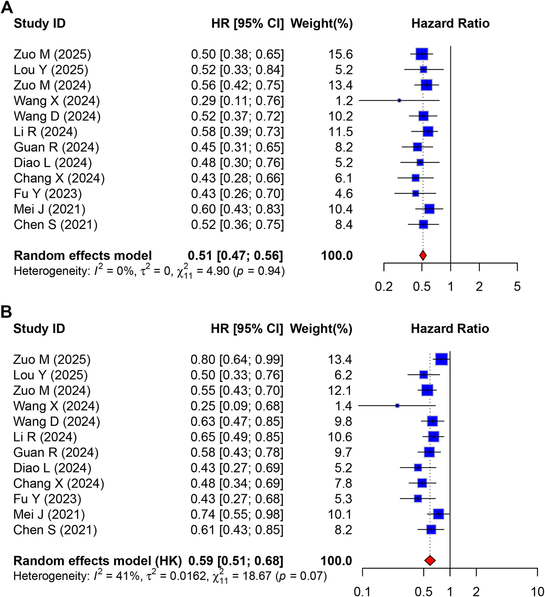
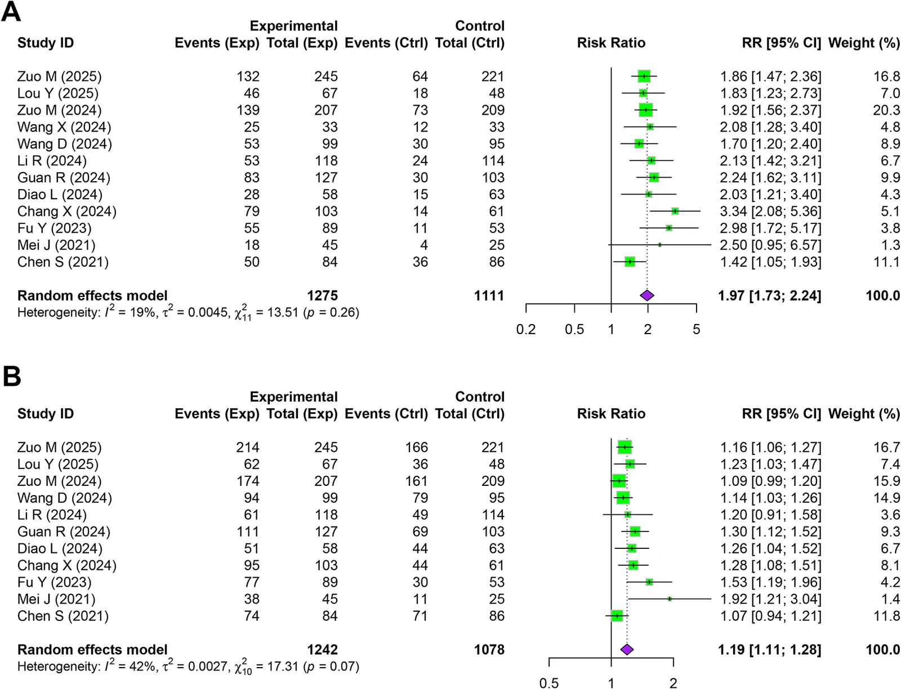

IR Weekly Literature Digest · Full-text analysis
Efficacy and safety of hepatic arterial infusion chemotherapy combined with tyrosine kinase inhibitors and PD-1 inhibitors for unresectable hepatocellular carcinoma: a meta-analysis.
Front Oncol. 2026 Oct 8;16:1896692. doi: 10.3389/fonc.2026.1896692
Read the original articlePubMedOverview
This PROSPERO-registered meta-analysis pooled 12 comparative studies (11 retrospective, 1 prospective cohort; 2,386 patients) of FOLFOX-based HAIC plus a TKI plus a PD-1 inhibitor (H-T-P, n=1,275) versus TKI plus PD-1 inhibitor (T-P, n=1,111) in unresectable HCC. Triple therapy was associated with a pooled OS HR of 0.51 (95% CI 0.47-0.56), PFS HR of 0.59 (0.51-0.68), ORR RR of 1.97 (1.73-2.24) and DCR RR of 1.19 (1.11-1.28). Grade ≥3 adverse events were more frequent with triple therapy (RR 1.29). The effect sizes are large and consistent, but the evidence rests entirely on non-randomized data with probable selection bias and small-study/publication bias, so the magnitude is likely overestimated.
Study design
Systematic review and meta-analysis following PRISMA, registered in PROSPERO (CRD420251113276). PubMed, Embase and Cochrane searched from inception to July 2025, plus reference screening. Two independent reviewers screened and extracted data. Eligible designs were RCTs or comparative cohorts. 551 records were identified; after 156 duplicates and 333 title/abstract exclusions, 62 full texts were assessed and 12 studies were included (2021-2025). Quality was assessed with the Newcastle-Ottawa Scale (all studies scored ≥7). Pooling used random-effects models with the Hartung-Knapp-Sidik-Jonkman adjustment in R 4.4.0. HRs were used for OS/PFS and RRs for ORR/DCR/AEs. Publication bias was assessed with funnel plots, Egger and Harbord tests, and trim-and-fill. Leave-one-out sensitivity analyses were done. No RCTs were found.
Patients
Adults with unresectable/advanced HCC. Most studies had BCLC C disease; many cohorts were exclusively BCLC C (e.g., Zuo 2025, Lou, Guan, Fu), and some had only a few BCLC B patients. Guan 2024 included only patients with extrahepatic metastasis (127 and 103). Most patients were Child-Pugh A. The largest study (Zuo 2025: 245 vs 221) contributed about 20% of the patients. HAIC was FOLFOX-based in all studies. TKIs were mostly lenvatinib (also sorafenib, apatinib, donafenib). PD-1 inhibitors were camrelizumab, sintilimab, tislelizumab, toripalimab and pembrolizumab. Baseline imbalances were visible in Table 1: Child-Pugh B in Zuo 2024 was 20 vs 0; BCLC B/C was 15/192 vs 34/175; extrahepatic metastasis was 86 vs 162 in that study; Diao 2024 had an age imbalance. Several studies had missing baseline data (Wang X 2024). One conference abstract supplied only OS, PFS and ORR. Prior ICI exposure could not be analysed.
Intervention and comparator
Experimental arm: HAIC (FOLFOX-based in all studies) plus TKI plus PD-1 inhibitor. Control arm: TKI plus PD-1 inhibitor. The paper does not give technical HAIC details such as catheter approach, oxaliplatin/fluorouracil doses, cycle number or treatment sequencing; these were presumably heterogeneous. No pooled analysis by TKI or PD-1 type was done.
Results
| Overall survival (12 studies) | Pooled HR 0.51 (95% CI 0.47-0.56; P<0.001) favouring H-T-P; I2 = 0.0%, P = 0.936. Egger P = 0.011; trim-and-fill imputed 3 studies, adjusted HR 0.53 (0.49-0.58; P<0.001). |
|---|---|
| Progression-free survival (12 studies) | Pooled HR 0.59 (0.51-0.68; P<0.001); I2 = 41.1%, Q P = 0.067. Egger P = 0.002; trim-and-fill imputed 4 studies, adjusted HR 0.65 (0.56-0.76; P<0.001). |
| Objective response rate (12 studies) | RR 1.97 (1.73-2.24; P<0.001); I2 = 18.6%, P = 0.261. Harbord P = 0.748 (no evidence of publication bias). |
| Disease control rate (11 studies) | RR 1.19 (1.11-1.28; P<0.001); I2 = 42.2%, P = 0.068. Harbord P = 0.014; trim-and-fill adjusted RR 1.14 (1.04-1.24; P = 0.007). |
| Pooled multivariable prognostic factors (Table 2) | Treatment (triple vs dual) HR 0.44 (0.39-0.50; P<0.001) for OS and 0.51 (0.41-0.63; P<0.001) for PFS. Other OS predictors: Child-Pugh B vs A HR 2.57 (1.76-3.73; P<0.001), tumour number >3 HR 1.69 (1.35-2.11; P=0.022), cirrhosis HR 1.60 (1.53-1.66; P=0.004). PFS predictors: distant metastasis HR 1.40 (1.03-1.92; P=0.039), cirrhosis HR 1.72 (1.05-2.86; P=0.034). PVTT was not significant (OS HR 2.29 [0.83-6.31], P=0.072; PFS HR 1.81 [0.97-3.38], P=0.055). Several CIs were extremely wide (e.g., PFS Child-Pugh 0.01-304.24), indicating very few contributing studies. |
| All-grade AEs (11 studies) | RR 1.07 (0.92-1.25; P = 0.238); I2 = 71.5%, P = 0.015. |
| Grade ≥3 AEs | RR 1.29 (1.13-1.48; P = 0.004); I2 = 0.0%, P = 0.519. |
| Specific AEs (Table 3) | Grade ≥3 events higher with triple therapy: neutropenia RR 3.86 (3.02-4.94), vomiting 5.71 (3.16-10.31), abdominal pain 4.26 (1.33-13.62), thrombocytopenia 2.08 (1.60-2.71), AST 2.01 (1.31-3.08), ALT 1.97 (1.42-2.74), anemia 1.88 (1.17-3.01), hypoalbuminemia 1.42 (1.03-1.95). Hoarseness grade ≥3 was lower (RR 0.17). Hypertension, hand-foot syndrome, diarrhea, rash and hypothyroidism did not differ. |
| Sensitivity | Leave-one-out analyses did not materially change the pooled estimates (Supplementary Figure 3). |
Key figures


| Study ID | Study design | Treatment regimen | No. of patients | Age (mean ± SD, year) | Male/female | BCLC stage (B/C) | Child-Pugh class (A/B) | Extrahepatic metastasis (no/yes) |
|---|---|---|---|---|---|---|---|---|
| Zuo M (2025) | RCS | HAIC+TKI+PD-1 | 245 | ≤50/>50:133/112 | 220/25 | C:245 | 222/23 | 111/134 |
| TKI+PD-1 | 221 | ≤50/>50:116/105 | 182/39 | C:221 | 199/22 | 123/98 | ||
| Lou Y (2025) | RCS | HAIC+Len+PD-1 | 67 | 56.15 ± 7.78 | 61/6 | C:67 | 56/11 | 27/40 |
| Len+PD-1 | 48 | 53.48 ± 10.39 | 44/4 | C:48 | 37/11 | 13/35 | ||
| Zuo M (2024) | RCS | HAIC+Apa+Cam | 207 | ≤65/>65:190/17 | 185/22 | B/C:15/192 | 187/20 | 121/86 |
| Apa+Cam | 209 | ≤65/>65:181/28 | 188/21 | B/C:34/175 | 209/0 | 47/162 | ||
| Wang X (2024) | PCS | HAIC+Len+PD-1 | 33 | NA | NA | C:33 | NA | NA |
| Len+PD-1 | 33 | NA | NA | C:33 | NA | NA | ||
| Wang D (2024) | RCS | HAIC+TKI+PD-1 | 99 | 56.40 ± 8.70 | 81/18 | NA | 70/29 | 34/65 |
| TKI+PD-1 | 95 | 57.11 ± 8.60 | 78/17 | NA | 72/23 | 24/71 | ||
| Li R (2024) | RCS | HAIC+Len+PD-1 | 118 | ≤60/>60:102/16 | 103/15 | B/C:9/109 | NA | 65/53 |
| Len+PD-1 | 114 | ≤60/>60:97/17 | 93/21 | 13/101 | NA | 59/55 | ||
| Guan R (2024) | RCS | HAIC+Len+PD-1 | 127 | 51.90 ± 10.88 | 107/20 | C:127 | 104/23 | 0/127 |
| Len+PD-1 | 103 | 54.01 ± 11.54 | 94/9 | C:103 | 84/19 | 0/103 | ||
| Diao L (2024) | RCS | HAIC+Len+PD-1 | 58 | ≤50/>50:16/52 | 49/9 | 24/34 | 49/9 | 39/19 |
| Len+PD-1 | 63 | ≤50/>50:5/27 | 50/13 | 25/38 | 55/8 | 42/21 | ||
| Chang X (2024) | RCS | HAIC+Len+PD-1 | 103 | 52.0 ± 8.82 | 91/12 | 4/99 | 84/19 | 71/32 |
| Len+PD-1 | 61 | 56.0 ± 7.88 | 57/4 | 2/59 | 50/11 | 41/20 | ||
| Fu Y (2023) | RCS | HAIC+Len+PD-1 | 89 | 51.9 ± 10.5 | 83/6 | C:89 | 88/1 | 68/21 |
| Len+PD-1 | 53 | 53.5 ± 10.5 | 50/3 | C:53 | 47/6 | 27/26 | ||
| Mei J (2021) | RCS | HAIC+Len+PD-1 | 45 | 49.1 ± 10.6 | 38/7 | 5/40 | 44/1 | 30/15 |
| Len+PD-1 | 25 | 50.1 ± 12.3 | 18/7 | 3/22 | 22/3 | 12/13 | ||
| Chen S (2021) | RCS | HAIC+Len+Pem | 84 | 52(42-67) | 72/12 | 22/62 | 71/13 | 64/20 |
| Len+Pem | 86 | 53(43-69) | 71/15 | 21/65 | 75/11 | 62/24 |
| Adverse events | All grade | Grade ≥3 | ||
|---|---|---|---|---|
| RR [95% CI] | P | RR [95% CI] | P | |
| Elevated ALT | 1.77 [1.29; 2.42] | 0.003 | 1.97 [1.42, 2.74] | 0.001 |
| Elevated AST | 1.70 [1.22, 2.38] | 0.006 | 2.01 [1.31, 3.08] | 0.006 |
| Hyperbilirubinemia | 1.41 [0.95, 2.10] | 0.078 | 1.61 [0.75, 3.43] | 0.183 |
| Hypoalbuminemia | 1.05 [0.88, 1.26] | 0.490 | 1.42 [1.03, 1.95] | 0.041 |
| Anemia | 2.13 [1.55, 2.91] | 0.001 | 1.88 [1.17, 3.01] | 0.019 |
| Neutropenia | 2.56 [1.44, 4.55] | 0.005 | 3.86 [3.02, 4.94] | <0.001 |
| Thrombocytopenia | 1.90 [1.12, 3.22] | 0.023 | 2.08 [1.60, 2.71] | <0.001 |
| Hypothyroidism | 0.98 [0.70, 1.38] | 0.897 | 0.97 [0.16, 5.96] | 0.965 |
| Elevated creatinine | 1.71 [1.26, 2.32] | 0.007 | 2.61 [0.78, 8.74] | 0.063 |
| Proteinuria | 1.56 [1.13, 2.17] | 0.014 | 0.83 [0.48, 1.42] | 0.424 |
| Fever | 2.36 [1.17, 4.76] | 0.024 | 1.25 [0.19, 8.05] | 0.657 |
| Fatigue | 1.30 [1.07, 1.58] | 0.012 | 1.23 [0.58, 2.61] | 0.522 |
| Abdominal pain | 2.57 [1.23, 5.38] | 0.018 | 4.26 [1.33, 13.62] | 0.023 |
| Nausea | 1.92 [1.13, 3.25] | 0.023 | 2.27 [0.38, 13.50] | 0.238 |
| Vomiting | 3.42 [1.80, 6.48] | 0.003 | 5.71 [3.16, 10.31] | <0.001 |
| Diarrhea | 1.12 [0.83, 1.51] | 0.423 | 1.59 [0.72, 3.51] | 0.208 |
| Decreased appetite | 1.30 [0.96, 1.77] | 0.081 | 1.92 [0.81, 4.55] | 0.094 |
| Hoarseness | 0.79 [0.45, 1.36] | 0.202 | 0.17 [0.06, 0.44] | 0.027 |
| Rash | 1.47 [0.95, 2.25] | 0.075 | 2.01 [0.74, 5.43] | 0.139 |
| Pruritus | 1.28 [0.69, 2.37] | 0.301 | 4.80 [0.23, 98.67] | 0.309 |
| Allergy | 0.73 [0.12, 4.65] | 0.278 | 1.79 [0.07, 43.24] | 0.719 |
| HFS | 1.05 [0.39, 2.86] | 0.876 | 1.08 [0.36, 3.25] | 0.839 |
| Oral ulcer | 0.97 [0.09, 10.83] | 0.915 | 1.06 [0.57, 1.97] | 0.439 |
| Weight loss | 1.26 [0.76, 2.10] | 0.188 | 1.01 [0.05, 19.14] | 0.992 |
| Hypertension | 1.01 [0.83, 1.23] | 0.926 | 0.90 [0.45, 1.79] | 0.722 |
| Hepatitis | 0.96 [0.45, 2.04] | 0.889 | 0.47 [0.13, 1.71] | 0.162 |
| Pneumonia | 0.75 [0.27, 2.05] | 0.468 | 0.81 [0.12, 5.59] | 0.749 |
Safety
AEs were taken from 11 studies. The grading system is not stated in the text (presumably CTCAE). All-grade AEs did not differ (RR 1.07), but grade ≥3 AEs were more frequent with H-T-P (RR 1.29, 1.13-1.48). The excess was in HAIC-typical toxicities: transaminase elevation, cytopenias (neutropenia, thrombocytopenia, anemia), abdominal pain and vomiting. TKI- and immune-related events (hypertension, hand-foot syndrome, diarrhea, rash, hypothyroidism) were similar. Treatment-related mortality, catheter or procedure complications, dose reductions, and treatment discontinuation were not pooled. The authors call the toxicity manageable, but the underlying studies' follow-up and reporting are heterogeneous, and the claim of "predictable and manageable" is not directly tested.
Strengths
- Prospective PROSPERO registration and PRISMA-compliant dual-reviewer process
- Focused exclusively on HAIC-based triplet versus TKI+PD-1 doublet, avoiding mixing HAIC with TACE
- Large pooled sample (2,386) with low heterogeneity for OS and ORR
- Consistent direction across OS, PFS, ORR, DCR; multiple sensitivity analyses (leave-one-out, trim-and-fill, HKSJ)
- Detailed organ-specific AE comparison
Limitations
- Essentially all data are retrospective (one prospective cohort, no RCT); selection bias and confounding by performance status, liver function, tumour burden and referral patterns are likely. Baseline imbalances are visible in Table 1 (e.g., Child-Pugh B 20 vs 0 and metastasis 86 vs 162 in Zuo 2024).
- Unclear whether HRs were adjusted (propensity-matched, multivariable) or crude. This is not specified and mixing the two can bias pooling. The 'pooled multivariable' analysis in Table 2 shows implausibly wide CIs for some factors and is based on very few studies, so it is hypothesis-generating at best.
- A pooled OS HR of 0.51 with I2 = 0% and very narrow CI (0.47-0.56) is implausibly strong compared with randomised HAIC trials and likely reflects the dominance of a few large retrospective cohorts and shared-institution/overlapping populations (several Chinese centres, possible patient overlap, e.g., two Zuo M papers). Overlap was not assessed. The stated 'high statistical power' does not remove bias.
- Significant small-study/publication bias for OS (Egger P = 0.011), PFS (P = 0.002) and DCR (Harbord P = 0.014). Trim-and-fill attenuated the effects (PFS HR 0.59 to 0.65). Egger tests with 12 studies have limited reliability and imputed corrections do not address confounding. The narrow CIs with HKSJ are surprising.
- NOS score ≥7 for all studies was labelled 'low risk of bias', which is generous for retrospective comparisons of treatment allocation. Only a supplementary table shows the scoring.
- Heterogeneity in the agents (lenvatinib, sorafenib, apatinib, donafenib; five PD-1 inhibitors), HAIC regimen/doses/cycles, and lines of therapy; no subgroup or meta-regression by TKI, PD-1, PVTT type, BCLC, extrahepatic spread or prior ICI exposure. Population is mostly Chinese HBV-related HCC, limiting generalizability to Western/non-viral HCC.
- Median OS/PFS, absolute differences, conversion-to-surgery rates, and quality of life were not reported, so clinical effect magnitude and the conversion-therapy claim in the Discussion are not supported by pooled data. Comparison against current standard first-line regimens (atezolizumab-bevacizumab, durvalumab-tremelimumab) is indirect. Response assessment criteria (RECIST vs mRECIST) were not harmonised.
- Safety data come from retrospective reporting with probable under-recording in control arms; one study lacked DCR/AE data (conference abstract), and AE heterogeneity was high (I2 71.5%). Statements that toxicity is 'highly predictable and manageable' are not supported by data on dose reduction, discontinuation, or hepatic decompensation.
In context
The authors view their findings as consistent with an earlier meta-analysis mixing TACE and HAIC with systemic therapy (OS HR 0.47, PFS HR 0.52). They argue the triplet's response rate far exceeds the roughly 20-30% ORR of systemic doublets such as atezolizumab-bevacizumab, and that deep responses could facilitate conversion to resection, particularly given the failure of adjuvant atezolizumab-bevacizumab in IMbrave050. They note that Vp4 PVTT outcomes with atezolizumab-bevacizumab remain poor (median OS 7.6 months). These comparisons are indirect and not tested in this analysis. They acknowledge the need for RCTs, and that the effect sizes may be slightly overestimated.
Implications for practice
The consistent direction and large effect on response and survival support the biological rationale and justify HAIC-containing triplets, especially in patients with a high intrahepatic tumour burden or PVTT who need tumour shrinkage. They also justify the pending prospective trials. However, this is a meta-analysis of mostly retrospective, probably confounded cohorts with publication bias, so confidence in the exact magnitude (HR about 0.5) should be low to moderate. Do not treat it as proof of superiority over systemic doublets or over the atezolizumab-bevacizumab standard. Expect more grade ≥3 hepatotoxicity, myelosuppression, abdominal pain and vomiting with HAIC, so careful selection (Child-Pugh A, adequate hepatic reserve) and an experienced multidisciplinary team with HAIC capability are needed. Randomised multicentre trials with defined HAIC protocols, patient-reported outcomes and conversion-resection endpoints are needed.